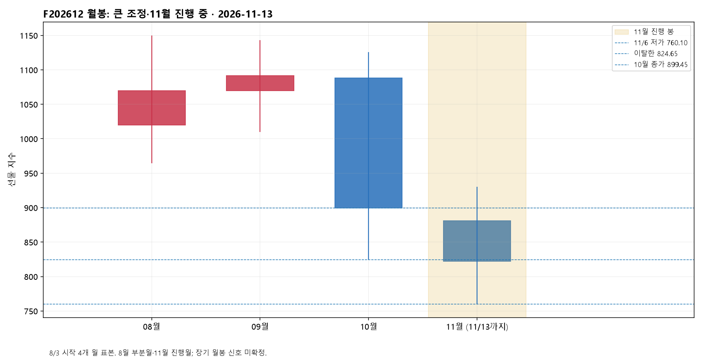
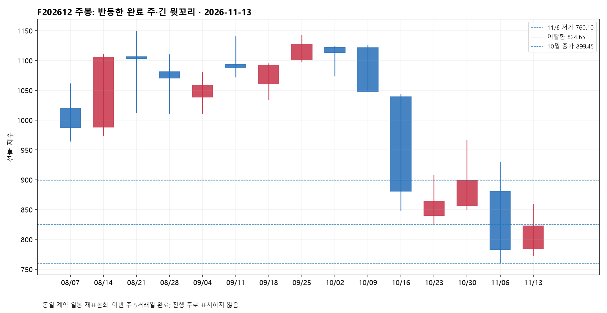
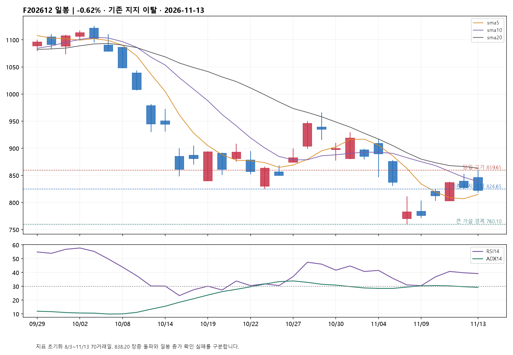
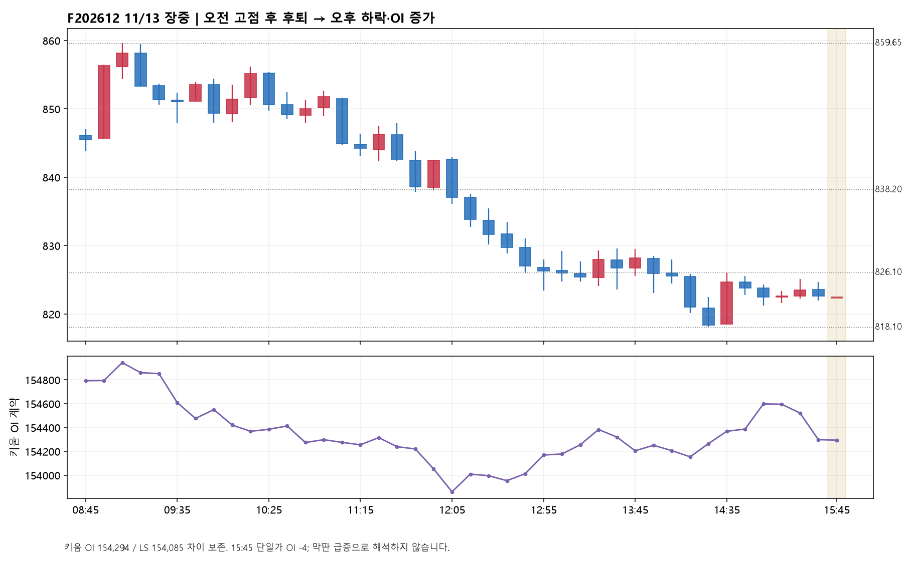
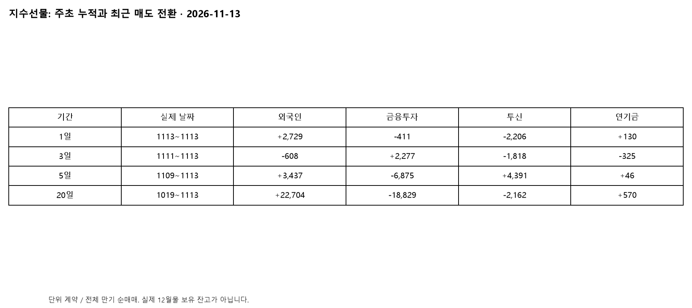
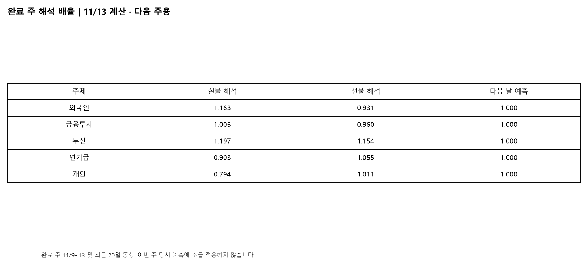
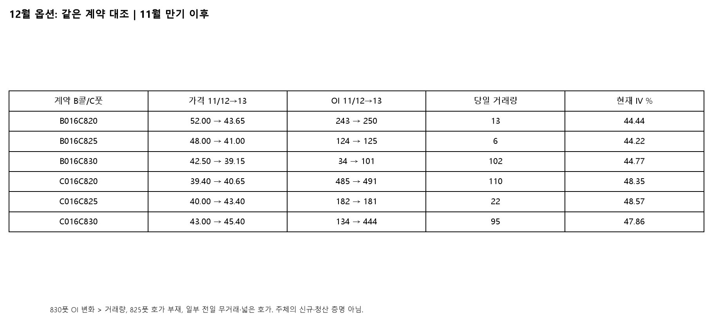

F202612 / A016C000 · 정규장 822.35 · OI 154,294 · 이후 야간 미반영
12월물 선물 822.35(-0.62%): 주간 반등은 남았지만 일봉·분봉은 약세예요. 어제의 824.65~824.95 지지 조건은 오늘 종가 이탈로 실패했습니다. 장중 859.65까지 올랐어도 838.20 위 일봉 종가·재지지는 충족하지 못했습니다. 824.65~826.10을 회복하기 전에는 반등보다 재저항 위험을 우선합니다. 818.10은 오늘 한 번 만든 저점일 뿐 강한 지지가 아니며, 10분봉 이탈 후 반등 실패 시 803.20~802.95를 다음 구조로 확인합니다. 오늘은 11월 옵션 만기 다음 거래일이고 12월물은 별개입니다.
11/12에 남겨 둔 '824.65~824.95 유지' 가설을 철회합니다. 10월 저가 824.65·11/10 고가 824.95 아래에 일봉 종가가 형성됐기 때문입니다. 새로운 818.10 저점을 제시해 기존 실패를 덮지 않습니다. 월봉은 진행 11월 종가가 완료 10월 종가 899.45보다 낮아 큰 조정 국면입니다. 완료 주 11/9~13은 782.95→822.35로 +5.03% 반등했지만 고가 859.65에서 크게 밀렸습니다. 일봉은 5일선 814.87 위, 10일선 838.82·20일선 863.43 아래이고 RSI14 39.24, ADX14 29.28, +DI 18.01 < -DI 29.09입니다. 선호 가설은 큰 조정 중 주간 반등의 약화, 대안은 818.10을 보존한 재상승입니다. 하위 파동의 5파·3파와 차수는 미확정입니다. 824.65~826.10 위 10분봉 종가 후 눌림 재지지가 첫 회복, 829.30~829.55가 다음 장중 반복 저항, 837.95~838.20 위 일봉 종가와 다음 눌림 유지가 일봉 개선 조건입니다. 이후에만 852.75·859.65를 확인합니다. 818.10 아래 10분봉 종가와 반등 재저항이면 803.20~802.95가 다음 확인 구간이며 기계적 목표가 아닙니다. 그 아래 일봉 마감이면 11/10~11 회복 구조가 더 약해집니다. 771.55와 760.10은 더 큰 저점 구조이며 760.10은 11/6 이후 회복 가설의 최종 경계로 보존합니다.
전체 만기 지수선물은 외국인 +2,729계약, 투신 -2,206, 금융투자 -411, 연기금 +130, 기관 합계 -2,483입니다. 외국인이 기관 매도의 반대편을 상당 부분 받아냈지만 가격 방어는 실패했습니다. 외국인 선물 매수 하나를 상방 확정 근거로 삼기 어려운 날입니다. 최근 3일(11/11~13)은 외국인 -608·투신 -1,818계약인 반면 5일(11/9~13)은 외국인 +3,437·투신 +4,391계약입니다. 주초 누적 매수와 최근 변화가 충돌하며 특히 투신은 최근 매도로 바뀌었습니다. 20일(10/19~11/13) 외국인 +22,704·투신 -2,162계약도 구분합니다. 기관 합계와 세부 주체를 더하지 않고, 순매매를 보유량으로 부르지 않습니다.
현물 외국인·투신은 어제 순매수에서 오늘 순매도로 바뀌었고 금융투자도 순매도였습니다. 연기금은 현물 순매수였지만 매수 확산보다는 일부 방어로 해석합니다. 외국인 주식선물 -214,448계약은 지수선물 +2,729계약과 반대이며 계약 수와 명목가치를 합산하지 않습니다. 프로그램은 오늘 차익·비차익 모두 순매도, 3·5일 합계는 순매수, 20일은 순매도입니다. 최근 회복 누적과 오늘 후퇴를 함께 봅니다. 현물·프로그램 금액은 LS 원시 단위의 고정 원화 환산을 독립 확인하지 못해 임의로 억원 표시하지 않았습니다. 선물 822.35−KOSPI200 824.78 = 시장 베이시스 -2.43, 제공업체 이론 베이시스 +1.77 대비 -4.20입니다. 다만 선물 15:45와 현물 15:30의 비동시 종가이므로 즉시 체결 가능한 차익이나 적정가격으로 단정하지 않습니다.
09:05 표시 봉에서 가격 고가 859.65와 OI 154,944가 나온 뒤 밀렸습니다. 고정 구간 08:45→12:05는 가격 845.50→837.05(-8.45), OI 154,792→153,861(-931)로 포지션 축소를 동반했습니다. 이어 12:05→15:25는 가격 837.05→822.65(-14.40), OI 153,861→154,298(+437)여서 오후에는 가격 하락과 참여 증가가 겹쳤습니다. 이는 단기 약세 확인값이지만 특정 투자자의 신규 숏 증명은 아닙니다. 15:25→15:45 종가 단일가는 가격 -0.30, OI -4로 막판 OI 급증은 없었습니다. LS 시간대 외국인 선물 누적은 15:00 +371→15:25 +1,094→15:45 +1,077→최종 +2,729계약입니다. 마감 후 집계 변화가 커 최종 매수를 모두 마지막 체결 주문으로 돌리지 않습니다. 투신 현물도 15:30 표시 +663에서 15:45 -639로 바뀌어 실제 주문 시각과 집계 갱신 시각을 구분했습니다.
키움 12월물 마감 OI는 154,294계약입니다. 오늘 재조회한 전일 154,035 대비 +259이며, 어제 최초 저장 153,774와 비교한 +520은 기준이 다릅니다. 전일 정정 차이 261계약의 원인은 미확인으로 보존했습니다. 오늘 LS는 154,085(+50)로 키움과 209계약 차이가 있어 혼합하지 않았습니다. 동일한 오늘 키움 시계열에서 3일 가격 +10.25/OI -7,379, 5일 가격 +39.40/OI -8,199, 20일 가격 -58.70/OI +5,879입니다. 주간 반등 전체는 OI 축소와 겹치지만 오늘 오후는 반대였다는 점이 중요합니다. 3월물은 별도 조회에서 종가 815.65, 거래량 46, OI 6,293(+603)입니다. OI 증가가 표시 거래량을 넘는 집계 범위 문제가 있어 롤오버 규모를 확정하지 않습니다. LS CVD는 마감 집계 +338까지만 검증됐고 미분류 2,805계약·장중 45개 공백이 있어 완전한 매수 경로로 쓰지 않습니다.
0787 원본에서 외국인은 콜 -3,626계약·-45억원, 풋 +636계약·-24억원입니다. 어제 양쪽 금액 순매수에서 오늘 양쪽 금액 순매도로 달라졌지만 풋 수량·금액이 엇갈려 델타 방향을 단순화할 수 없습니다. 12월 830콜은 가격 42.50→39.15, OI 34→101(+67), IV 42.56→44.77%(+2.21%p), 델타 +0.5104입니다. 가격 하락·OI 증가·IV 상승은 관측됐지만 외국인의 신규 콜 매수나 상방 베팅을 증명하지는 않습니다. 해당 계약 거래량은 102, 호가 36.70/40.80으로 넓습니다. 820풋은 가격 39.40→40.65, OI 485→491(+6), IV 50.34→48.35%, 델타 -0.4496으로 가격과 IV가 반대로 움직였습니다. 830풋 OI +310은 거래량 95보다 커 신규 포지션 수량 해석에서 제외하고, 825풋은 유효 양방향 호가가 없으며 825콜·풋 전일 거래량이 0이라 전일 가격 비교 신뢰도를 낮춥니다. 820/825/830 콜·풋 모두 코드·만기·가격·OI·IV를 따로 보존했습니다. 일부 유효 계약의 변화는 설명에 반영하되 전체 스큐·기간구조·딜러 감마로 확대하지 않습니다.
공식 계약명세의 둘째 목요일 규칙을 기준으로 11/12는 11월 옵션 만기였고 오늘 11/13은 그 다음 정규 거래일입니다. 12월 선물·옵션 만기는 12/10으로 구분합니다. 소멸한 11월 옵션 누적을 12월 잔고로 이어붙이지 않았습니다. 오늘 12월물은 장 초반 회복했지만 종가가 전일보다 낮고 기존 지지 아래에 있어 만기 후 상승 지속을 확인하지 못했습니다. 그렇다고 만기 효과만으로 하락 원인을 확정하지 않습니다. 12월과 1월 옵션 체인을 실제 조회했지만 얇은 거래와 호가 문제로 고정 델타 기간구조는 사용하지 않았습니다. 다음 거래일에는 824.65~826.10 회복과 현물·프로그램 매도 완화가 함께 나오는지, 818.10 재이탈 뒤 반등이 막히는지 확인합니다.
오늘 11/9~13 주가 완료돼 새 해석 배율을 계산했습니다. 현물 투신 1.197·외국인 1.183, 선물 투신 1.154·외국인 0.931입니다. 다음 주 해석용 갱신값이며 이번 주 당시 예측에 사용한 것처럼 소급하지 않습니다. 최근 20일 수급과 당일 등락의 방향 일치는 현물 투신 16/20·외국인 13/20, 선물 투신 15/20·외국인 9/20이었습니다. 현물 외국인·투신과 선물 투신을 상대적으로 더 살펴볼 이유는 있지만 인과적 시장 영향 비중은 아닙니다. 모든 다음 날 예측 배율은 1.000입니다. 10/12~11/13 입력의 완료 사건에서 외국인·투신 동반 매수·당일 상승 뒤 다음 날 상승은 현물 3/7(42.9%)·선물 1/3(33.3%), 동반 매도·하락 뒤 하락은 현물 4/10(40%)·선물 0/2입니다. 오늘 현물 동반 매도·하락 사건은 다음 거래일 미도래로 대기이며 분모에서 제외했습니다. 작은 표본의 관측 비율을 다음 날 예측 확률이나 역방향 승률로 바꾸지 않습니다.
동일 12월물 일봉은 유효 거래량이 있는 8/3~11/13 70거래일, 분봉·OI는 10/16~11/13을 사용했습니다. 3일(11/11~13) 가격 +10.25, 5일(11/9~13) +39.40, 20일(10/19~11/13) -58.70으로 짧은 반등과 긴 조정이 충돌합니다. 주봉은 이번 주 완료, 11월 월봉은 진행 중이며 8월 첫 부분월을 구분했습니다. 9/11~11/13 42거래일 LS 단일 원천의 전체 만기 선물 순매매는 외국인 +26,961·기관 -25,596·투신 -5,965·연기금 +870계약입니다. 이는 9월 만기 이후 관찰 구간이지 실제 12월 계약 보유량·평단이 아닙니다. 보존 장부의 9/21·9/23 값과 차이를 공개하고 혼합하지 않았습니다. 옵션 최근 3·5·20일 전체 만기 순매매는 거래 활동 참고만 가능하며 11월 만기를 가로지르는 연속 포지션으로 합산하지 않습니다.
KOSPI 5,290.53(-0.98%), KOSPI200 824.78(-1.05%)를 같은 날짜 키움·LS 가격과 대조했습니다. KOSPI 상승 451·하락 420·보합 41종목이며 상한 3은 별도 필드로 중복 가산하지 않습니다. 상승·하락 중 상승 비율 51.8%로 지수 하락을 시장 전 종목 동반 붕괴로 부르기는 어렵습니다. 반면 KOSPI200은 상승 90·하락 105로 약했고 삼성전자 -0.48%, SK하이닉스 -2.47%였습니다. 대형주·지수의 약세와 나머지 종목의 상대적 방어가 공존했다는 해석입니다. 정확한 지수 기여도와 두 주도주를 제외한 시장 전체 투자자 수급은 계산하지 못했습니다. 국내·해외 다중 시간대 보조 파일은 11/12, 14단계 연구는 11/10이라 오늘 근거에서 제외했습니다. 선물 자체의 동일 만기 월·주·일·10분봉이 중심입니다.

진행 11월 822.35는 완료 10월 종가 899.45 아래입니다.

11/9~13 완료 주 +5.03%, 고가 859.65에서 822.35로 후퇴했습니다.

11/12에 남겨 둔 '824.65~824.95 유지' 가설을 철회합니다. 10월 저가 824.65·11/10 고가 824.95 아래에 일봉 종가가 형성됐기 때문입니다. 새로운 818.10 저점을 제시해 기존 실패를 덮지 않습니다. 월봉은 진행 11월 종가가 완료 10월 종가 899.45보다 낮아 큰 조정 국면입니다. 완료 주 11/9~13은 782.95→822.35로 +5.03% 반등했지만 고가 859.65에서 크게 밀렸습니다. 일봉은 5일선 814.87 위, 10일선 838.82·20일선 863.43 아래이고 RSI14 39.24, ADX14 29.28, +DI 18.01 < -DI 29.09입니다. 선호 가설은 큰 조정 중 주간 반등의 약화, 대안은 818.10을 보존한 재상승입니다. 하위 파동의 5파·3파와 차수는 미확정입니다. 824.65~826.10 위 10분봉 종가 후 눌림 재지지가 첫 회복, 829.30~829.55가 다음 장중 반복 저항, 837.95~838.20 위 일봉 종가와 다음 눌림 유지가 일봉 개선 조건입니다. 이후에만 852.75·859.65를 확인합니다. 818.10 아래 10분봉 종가와 반등 재저항이면 803.20~802.95가 다음 확인 구간이며 기계적 목표가 아닙니다. 그 아래 일봉 마감이면 11/10~11 회복 구조가 더 약해집니다. 771.55와 760.10은 더 큰 저점 구조이며 760.10은 11/6 이후 회복 가설의 최종 경계로 보존합니다.

09:05 표시 봉에서 가격 고가 859.65와 OI 154,944가 나온 뒤 밀렸습니다. 고정 구간 08:45→12:05는 가격 845.50→837.05(-8.45), OI 154,792→153,861(-931)로 포지션 축소를 동반했습니다. 이어 12:05→15:25는 가격 837.05→822.65(-14.40), OI 153,861→154,298(+437)여서 오후에는 가격 하락과 참여 증가가 겹쳤습니다. 이는 단기 약세 확인값이지만 특정 투자자의 신규 숏 증명은 아닙니다. 15:25→15:45 종가 단일가는 가격 -0.30, OI -4로 막판 OI 급증은 없었습니다. LS 시간대 외국인 선물 누적은 15:00 +371→15:25 +1,094→15:45 +1,077→최종 +2,729계약입니다. 마감 후 집계 변화가 커 최종 매수를 모두 마지막 체결 주문으로 돌리지 않습니다. 투신 현물도 15:30 표시 +663에서 15:45 -639로 바뀌어 실제 주문 시각과 집계 갱신 시각을 구분했습니다.

전체 만기 지수선물은 외국인 +2,729계약, 투신 -2,206, 금융투자 -411, 연기금 +130, 기관 합계 -2,483입니다. 외국인이 기관 매도의 반대편을 상당 부분 받아냈지만 가격 방어는 실패했습니다. 외국인 선물 매수 하나를 상방 확정 근거로 삼기 어려운 날입니다. 최근 3일(11/11~13)은 외국인 -608·투신 -1,818계약인 반면 5일(11/9~13)은 외국인 +3,437·투신 +4,391계약입니다. 주초 누적 매수와 최근 변화가 충돌하며 특히 투신은 최근 매도로 바뀌었습니다. 20일(10/19~11/13) 외국인 +22,704·투신 -2,162계약도 구분합니다. 기관 합계와 세부 주체를 더하지 않고, 순매매를 보유량으로 부르지 않습니다.

오늘 11/9~13 주가 완료돼 새 해석 배율을 계산했습니다. 현물 투신 1.197·외국인 1.183, 선물 투신 1.154·외국인 0.931입니다. 다음 주 해석용 갱신값이며 이번 주 당시 예측에 사용한 것처럼 소급하지 않습니다. 최근 20일 수급과 당일 등락의 방향 일치는 현물 투신 16/20·외국인 13/20, 선물 투신 15/20·외국인 9/20이었습니다. 현물 외국인·투신과 선물 투신을 상대적으로 더 살펴볼 이유는 있지만 인과적 시장 영향 비중은 아닙니다. 모든 다음 날 예측 배율은 1.000입니다. 10/12~11/13 입력의 완료 사건에서 외국인·투신 동반 매수·당일 상승 뒤 다음 날 상승은 현물 3/7(42.9%)·선물 1/3(33.3%), 동반 매도·하락 뒤 하락은 현물 4/10(40%)·선물 0/2입니다. 오늘 현물 동반 매도·하락 사건은 다음 거래일 미도래로 대기이며 분모에서 제외했습니다. 작은 표본의 관측 비율을 다음 날 예측 확률이나 역방향 승률로 바꾸지 않습니다.

0787 원본에서 외국인은 콜 -3,626계약·-45억원, 풋 +636계약·-24억원입니다. 어제 양쪽 금액 순매수에서 오늘 양쪽 금액 순매도로 달라졌지만 풋 수량·금액이 엇갈려 델타 방향을 단순화할 수 없습니다. 12월 830콜은 가격 42.50→39.15, OI 34→101(+67), IV 42.56→44.77%(+2.21%p), 델타 +0.5104입니다. 가격 하락·OI 증가·IV 상승은 관측됐지만 외국인의 신규 콜 매수나 상방 베팅을 증명하지는 않습니다. 해당 계약 거래량은 102, 호가 36.70/40.80으로 넓습니다. 820풋은 가격 39.40→40.65, OI 485→491(+6), IV 50.34→48.35%, 델타 -0.4496으로 가격과 IV가 반대로 움직였습니다. 830풋 OI +310은 거래량 95보다 커 신규 포지션 수량 해석에서 제외하고, 825풋은 유효 양방향 호가가 없으며 825콜·풋 전일 거래량이 0이라 전일 가격 비교 신뢰도를 낮춥니다. 820/825/830 콜·풋 모두 코드·만기·가격·OI·IV를 따로 보존했습니다. 일부 유효 계약의 변화는 설명에 반영하되 전체 스큐·기간구조·딜러 감마로 확대하지 않습니다.
작성 2026-11-13T17:22:47.270512+09:00 · 조건부 해설, 주문·비중 지시 아님